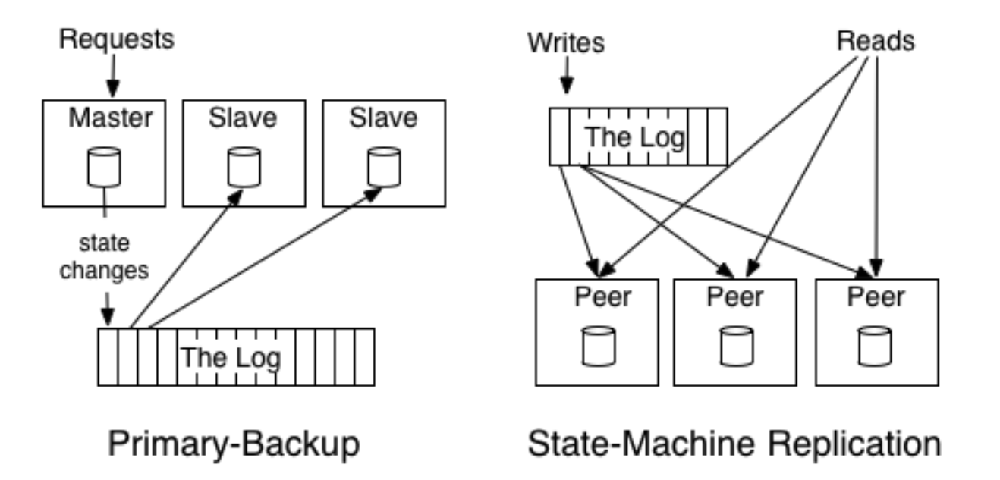

1/11/2021 First day and I love it!
It has been 10 months filled with self-doubt - was I being too picky? was I just imagining unrealistic IT companies? Now I know the answer is no - there ARE IT companies that make raising issues so easy, that keeps accessible wikis, that encourages trying things out and failing and recovering, that keeps a real CI/CD and monitoring system. And I deserve a company like this.
Today I raised an issue about the Gift Card behaviour to the trading team. I got immediate positive response and although there’s already a ticket for it, I know I did the right thing from the feedbacks.
Today I was also going through the wikis to set up my dev environment, and made changes to it immediately when I saw something outdated.
2/11/2021 Had some interestingly awkward conversations LOL
I am good at saying awkward things then replaying it all night 😂
But being confident and say things and practice is better than staying silent. Good that I have places to get my (awkward) voices heard. I’ll get better at this.
3/11/2021 Learn
Our Tools
Resque
https://github.com/resque/resque
Queue background jobs and process them asynchronously
Catapult
Catapult is a service in charge of deploying services to production. It will post notifications once a service deployed and @ mentions the users that have commits in the PR merged to master.
(Merged my first PR to add github accounts to Catapult!)
Learn Databus
Why Databus
Problem with API and queue: there are possible errors and therefore inconsistency in the payment and the sale. D
To achieve a global log which is transactionally consistent with our mysql databases, we build the logs from our MySQL databases.
Maxwell’s daemon
Maxwell’s daemon, an application that reads MySQL binlogs and writes row updates as JSON to Kafka, Kinesis, or other streaming platforms.
4/11/2021 Reading
Linkedin article - The Log: What every software engineer should know about real-time data’s unifying abstraction
Goal
- Build distributed data systems and real-time application architecture on logs
- Use logs for data integration, real-time processing and system building
What is a log
- append-only
- totally-ordered: The log entry number can be used as logical timestamp
- purpose: record what happened and when for distributed system this is in many ways the heart of the problem
Usage of logs in database
- Purpose: keep in sync the variery of data structures and indexes in the presence of crashes
- Make data structure/index changes atomic and durable
- Database uses a log to write out information about the records they will be modifying, before applying the changes to all the varias data structures it maintains.
Models of using logs to maintain distributed consistency

The difference is that active-active(state machine) model keeps a log of the incoming requests and each replica process these requests in order; active-backup has one replica processing the requests and logging its updates, then the other replicas update themselves based on these logs from the leader.
Tables and events as dual: tables support data at rest and logs capture change.
A version control system usually models the sequence of patches, which is in effect a log.
5/11/2021
Our team, our purpose
Dealing with conflicts
Most of the time when there’s a strong disagreement, it is because one party has some important context that they find it so obvious that they assume the other party would know.
- Share more context.
- Involve a third party that comes from a bit of distance and a different perspective. They will be ask questions and help surface the issues.
DEI workshop
Listening deeply enough to be changed by what you learn.
https://uxdesign.cc/inclusive-design-those-ignored-that-we-must-design-for-e48243a62216
8/11/2021
Data migration
- Add migration script with comment
goose upandgoose down - Start a new ECS service with the latest task definition and command
migrateto run swiper’s migrate functionality. Cluster: vend-production. - Connect to database to verify
goose
Goose is a database migration tool. Manage your database schema by creating incremental SQL changes or Go functions.
https://github.com/pressly/goose
Our monitoring tools
- Kibana: collects logs of all levels for querying
- Datadog: dashboard and alert based on metrics （e.g. number of 500 responses）
- Raygun: logs with higher level than info goes to Raygun to deliver alerts
Feature flag
Feature flag keeps track of what features are enabled for certain retailers.
9/11/2021
Workflows
Custom Fields
- Typed
- Predefined
- Full API access
- Editable on UI
- Integrated into Workflow actions
Events/Triggers
- Triggered by the register/backend on certain events
- e.g.
sale.ready_for_payment
Action
- The stop action. Define its
type,title,message,dismiss_label - Add and Remove Line Item Actions, e.g. When buying a bottled drink, add bottle-deposit - No UI
- Set custom field action, sets the value of a custom field.
- Required custom fields action: ask the cashier to put in values for the custom fields
- The stop action. Define its
Tutorial: business_rules
Frontend walkthrough
- We use GraphQL to do queries - see Graphter
- webregister: we write React code and convert to Angular with Reactangular
- Payment Type: we keep the custom configuration fields in a json string
configin the DB
Troubleshooting Swiper connection
Resolved!
- Learned to debug Go with VS Code
- Narrowed down to
mysqlhost not being resolved - Was pointed to the
startscript to set up nobob hosts by Sepehr
10/11/2021
Things at Vend that makes me flipped
- Our product managers do focus on product and not poking engineers
- They focus on how products create values via
- customer acquisition
- customer retention
- customer expansion
- They work with engineers to decide on the values of products instead of assigning tickets around
- They work daily with retailers/interviews to find out how our PRODUCT is going
- They focus on how products create values via
- We have a snack-alert channel?? How cute is that
- We home-made a
Catapultservice to handle the deployments, and push notifications to Slack. It is configurable and integrates well with GitHub and Slack. - We have a
vendbotthat tells you the SRE on duty and the DX on duty! There’s primary, secondary and fallback - very helpful.
12/11/2021
Pair with Sheng on a merchant portal ticket
- GraphQL
- we have a GraphQL sandbox to explore the available queries
- we create new query/filters for GraphQL in graphter
- RPC
- Swiper calls LightSpeed GraphQL service using RPC to query
- We maintain RPC schemas in protobuf
- Frontend
- Frontend queries GraphQL to render the list of outlets
- GraphQL queries Outlets and Payments to collect the information and produce the correct
Our goal: provide an api backing a dropdown, so that user can choose from Outlets that already have an active LS account to review the updates
Incident response workshop
- @vn-overload bot to check service status and rollback services
- @vn-response to report an incidence
Beautiful dev environment workshop
- Need a repo for dotfiles, vscode config etc.
- Browser plugins: search
- Love my new VSCode theme! Snazzy Light
15/11/2021 - 16/11/2021
Pairing with Sheng to implement a GraphQL endpoint to allowing querying of outlets that have an active PLI.
Three parts:
- Update
protobufrepo to add the protobuf for rpc, this will be used between Swiper (server) and Graphter (caller). - Update
swiperrepo to implement the method defined in theprotobuf - Update
graphter‘s outletsschemato add a new argumentactiveLspayOnly, and updateresolverto call swiper’s rpc method to filter out the outlets with active pli.
Protobuf
Elements
- enum
- message, defining communication schema => go struct
- service, defining what
rpcendpoints the service will expose => go interface
Compiler
There’s a general protobuf compiler:
1 | RUN apt-get install -y protobuf-compiler |
A golang specific compiler:
1 | RUN go get -u github.com/golang/protobuf/protoc-gen-go |
And a twirp compiler for go:
1 | RUN go get -u github.com/twitchtv/twirp/protoc-gen-twirp@v7.1.0 |
Running the protoc compiler with the –go_out and –twirp_out options will generate .pb.go and .twirp.go files:
1 | protoc --proto_path=${GOPATH}/src:protobuf --go_out=paths=source_relative:go --twirp_out=paths=source_relative:go $d*.proto |
.pb.go is generated by --go_out with protoc-gen-go and is only language specific; .twirp.go is generated by --twirp_out and is twirp specific.
The .twirp.go file defines the Twirp server and the Twirp client. When the service.proto contains a service SwiperService
- A
SwiperServiceinterface. A twirp swiper server instance will have to implement all methods in the interface. - A
NewSwiperServiceProtobufClientfunction returning answiperServiceProtobufClient, which implementsSwiperService, and the client can use this client to invoke rpc methods.
Advantage of Twirp over gRPC
- Twirp: simple RPC framework with protobuf service definition. Doesn’t use gRPC’s binary encoding.
- Has compiler to compile protobuf. Can work in the json mode.
- Easier to debug: allows json mode.
17/11/2021
That was fun CI debugging!
Background
Goal: Build
graphterGraphter depends on the generator based on schema
The generation is implemented via the special
//go:generatecomment://go:generate go run github.com/99designs/gqlgen generateThe TravisCI pipeline runs
go generateand checks if any file changed. It expects no file to be changed because the user should only push when the generated file is in sync with schema.Problem:
go generatehas been run locally, but the pipeline still complains that the generation was not done.
Trouble shooting
- Have a look at the script that triggers the failure:
1 | go generate ./resolver/ |
- Have a look at
travis.ymland see what steps are executed. - Found there is an
installsection:
1 | install: |
Inside the script:
1 |
|
- If run
install.shlocally, thego.sumgets tidied up. - This means
git diff --quietis returning a falsy value (aka there’s a different). - The
gen.shscript should probably refine thegit diffcommand to only the generated part.
18/11/2021
Trouble shoot no Lightspeed payment on local store
Got some more debugging experiences;
This is caused by an inactive referred payment type: A business agreement that we should not show other payment types if the retailer comes as a client being referred by a payment type.
Learnt some testing tricks
t.Helper()
Helper marks the calling function as a test helper function. When printing file and line information, that function will be skipped. Helper may be called simultaneously from multiple goroutines.
See https://pkg.go.dev/testing#T.Helpers
http.ReadResponse: great for mocking http response with test data
1 | type stubTransport struct { |
This stubTransport can then be used in http client:
1 | func newStubTestClient(t *testing.T, files ...string) (*client.API, *graphql.Client) { |
22/11/2021
Postman
Pre-request script
Called before request. Can be added to collection for all requests to share, e.g. to get an API token. Written in javascript.
1 | const baseUrl = pm.environment.get('base_url') |
Inheriting
Authorization, pre-request scripts can be inherited from collection;
Variables can be accessed from env.
23/11/2021
gomock
Go’s mocking framework. Generates mocks from interface.
Utilizing go:… comments
1 | //go:generate mockgen -source=payment_type.go -destination=mocks/MockPaymentTypeClient.go -package=mocks |
gomock generates the mock type that exposes EXPECT() method to indicate expected usage.
Go embedding: interface in struct
1 | type mockFeatureClient struct { |
- An embedding in a struct promotes the embedded interface’s methods to the embedding struct.
- If method not implemented, will throw an nil err.
Selector
For a value x of type T or *T where T is not a pointer or interface type, x.f denotes the field or method at the shallowest depth in T where there is such an f. If there is not exactly one f with shallowest depth, the selector expression is illegal.
1 | package main |
24/11/2021
FED: MSW.js
Lightweight API mocking
26/11/2021
New weapon in BDD testing: DescribeTable
Takes a function with bunch of arguments, then the entries define various values of the arguments.
Our testing approaches
testify - require/assertion
require can be used for error handling
Mocking
Dynamic typed mocking
go/mock, go’s own mocking framework, can leverage //go: genearte comment
static typed mocking
mockery
29/11/2021
- More unit test refining: avoid over abstraction
- VSCode debug test - find out why dcp is returning 500
30/11/2021
Unit test review with Nathan take-away:
Emphasize the readability of unit test, even sometimes at the cost of code reusing - Unit test is expected to be more straightforward.
Clarity and conciseness
Having repeated things in test is not a bad things. Think about people coming back to check the code
1/12/2021
zsh, search history
ctrl + R
Fuzzy search: fzf
7/12/2021
Some AngularJS note
Decided to take the pick-up-as-I-go approach on AngularJS. Some points I picked up today:
$scope
The $scope in an AngularJS is a built-in object, which contains application data and methods. You can create properties to a $scope object inside a controller function and assign a value or function to it. The $scope is glue between a controller and view (HTML).
module
mustache syntax
Mustache in go:
https://github.com/cbroglie/mustache
go-cmp: package for equality of Go values
10/12/2021
- Security ticket: postMessage origin
23/12/2021
https://niuniuanran.github.io/2022/01/11/Functional-option-pattern-in-Go/
Reading: how vapi is used
Find out: How the caching with closure is working
16/2/2021 Reflektive
Didn’t say well at reflektive? Let’s try again.
I feel lucky to have been able to explore so many fields of Vend’s technical assets over a short three months time - I’ve contributed to the GraphQL microservice graphter, our RPC protobuf, made changes to Swiper API to make our queries more efficient, added new components to webregister, and migrated packages in monocle dependencies.
The highlight has been my contribution to card not present payment, where I get to create and test the payment flow. We utilize the useEffectReducer hook that has not been fully explored before, and I spent time to go through the documentation and share the knowledge.
I also took ownership of the tests for the flow, both unit test (with testing-library/render-hooks) and the end-to-end cypress testing.
I also get to deeply explore Stripe.js documentation in order to make the card collection form have consistent look and feel with our site. They provide components that behind the scene render an iframe for us, so that we do not need to have access to card information, which makes us PCI compliant. But the problem is this makes us lose some control on the look and feel of the element, and makes the testing extra challenging.
I contributed to the security of our system and implemented the origin validation feature to make our payment flow more secure.
The biggest challenge was when I had to contribute to AngularJS modules of the webregister, as I was not familiar with AngularJS and was not motivated to take a systematic approach to learn AngularJS from scratch. So I started with a surgical approach and as things started to make more sense, was able to get things more powerful.
I take more ownership on the quality of our code and refactored some of our tests to make them more decoupled with each other.
I’ve been taking online courses where I find the skill helpful to get the job done more efficiently: TypeScript OOP, React Debugging and Testing, Go distributed systems,